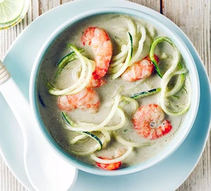

Prawn and Coconut Soup

Description
A super quick version of this flavoursome Thai green curry with just 4 ingredients. Our simple prawn and coconut soup is ideal for a midweek meal.
Ingredients
- 3 tbsp Thai green curry paste
- 400ml can coconut milk
- 150g cooked king prawns
- 250g courgetti
Method
- Heat 1 tsp flavourless oil in a frying pan over a medium heat
- Add the curry paste and cook for 1 min.
- Pour in the coconut milk, then leave to bubble away for a few mins before adding the prawns and courgetti.
- Cook for 1 min more to warm through, then divide between bowls.